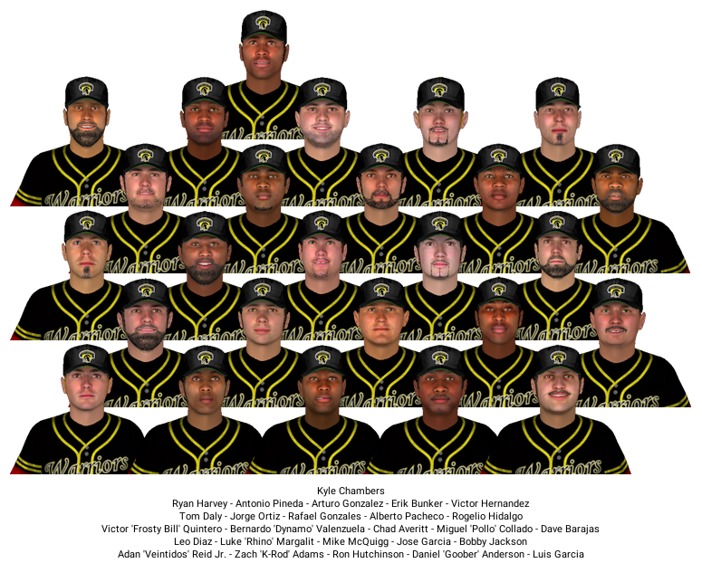

ATL8
ATL8 DET6
DET6 CHA3
CHA3 MIN9
MIN9 CHI10
CHI10 LA3
LA3 DAL0
DAL0 PHO3
PHO3 MIA4
MIA4 SD6
SD6 TB2
TB2 SF18
SF18 BOS2
BOS2 NAS6
NAS6 NY3
NY3 STL4
STL4 CIN4
CIN4 HOU4
HOU4 LV5
LV5 PHI3
PHI3 POR1
POR1 PIT4
PIT4 SEA1
SEA1San Francisco beat Tampa Bay 18–2
San Francisco Warriors stand at 64–57 through August 19.
Read the box score Experiencing Action Baseball
Experiencing Action Baseball

A fictional baseball world, played in OOTP and preserved game by game. See it for yourself.
San Francisco Warriors stand at 64–57 through August 19.
Read the box scoreChicago Fire stand at 64–57 through August 19.
Read the box scoreMinneapolis Blizzard stand at 54–66 through August 19.
Read the box score